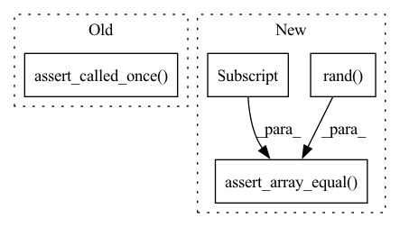

Pattern ID :12189
Before Change
if check_acceptance:
proposal.compute_acceptance.assert_called()
proposal.evaluate_likelihoods.assert_called_once()
assert proposal.approx_acceptance == [0.4, 0.5]
assert proposal.acceptance == [0.7, 0.8]
else:
proposal.compute_acceptance.assert_not_called()After Change
numpy_array_to_live_points(np.random.randn(drawsize, n_dims), names),
numpy_array_to_live_points(np.random.randn(drawsize, n_dims), names),
]
log_l = np.random.rand( poolsize)
proposal.initialised = True
proposal.max_radius = 50
proposal.dims = n_dims
proposal.poolsize = poolsize
proposal.drawsize = drawsize
proposal.min_radius = 0.1
proposal.fuzz = 1.0
proposal.indices = []
proposal.approx_acceptance = [0.4]
proposal.acceptance = [0.7]
proposal.keep_samples = False
proposal.fixed_radius = False
proposal.compute_radius_with_all = False
proposal.check_acceptance = check_acceptance
proposal._plot_pool = True
proposal.populated_count = 1
proposal.population_dtype = \
[("x_prime", "f8"), ("y_prime", "f8"), ("logP", "f8"), ("logL", "f8")]
proposal.draw_latent_kwargs = {"var": 2.0}
proposal.forward_pass = MagicMock(return_value=(worst_z, worst_q))
proposal.radius = MagicMock(return_value=(1.0, worst_q))
proposal.get_alt_distribution = MagicMock(return_value=None)
proposal.draw_latent_prior = MagicMock(side_effect=z)
proposal.rejection_sampling = MagicMock(
side_effect=[(a[:-1], b[:-1]) for a, b in zip(z, x)]
)
proposal.compute_acceptance = MagicMock(side_effect=[0.5, 0.8])
proposal.model = MagicMock()
proposal.model.batch_evaluate_log_likelihood = \
MagicMock(return_value=log_l)
proposal.plot_pool = MagicMock()
proposal.convert_to_samples = MagicMock(
side_effect=lambda *args, **kwargs: args[0]
)
FlowProposal.populate(proposal, worst_point, N=10, plot=True)
proposal.forward_pass.assert_called_once_with(
worst_point, rescale=True, compute_radius=True,
)
proposal.radius.assert_called_once_with(worst_z, worst_q)
assert proposal.r == 1
draw_calls = [
call(2, r=1.0, N=5, fuzz=1.0, var=2.0),
call(2, r=1.0, N=5, fuzz=1.0, var=2.0),
]
proposal.draw_latent_prior.assert_has_calls(draw_calls)
rejection_calls = [
call(z[0], worst_q), call(z[1], worst_q), call(z[2], worst_q)
]
proposal.rejection_sampling.assert_has_calls(rejection_calls)
proposal.plot_pool.assert_called_once()
proposal.convert_to_samples.assert_called_once()
np.testing.assert_array_equal(
proposal.convert_to_samples.call_args[0][0],
proposal.x
)
assert proposal.convert_to_samples.call_args[1]["plot"] is True
assert proposal.population_acceptance == (10 / 15)
assert proposal.populated_count == 2
assert proposal.populated is True
assert proposal.x.size == 10
if check_acceptance:
proposal.compute_acceptance.assert_called()
assert proposal.approx_acceptance == [0.4, 0.5]
assert proposal.acceptance == [0.7, 0.8]
else:
proposal.compute_acceptance.assert_not_called()
proposal.model.batch_evaluate_log_likelihood.assert_called_once_with(
proposal.samples
)
np.testing.assert_array_equal( proposal.samples["logL"] , log_l)
def test_populate_not_initialised(proposal):
Assert populate fails if the proposal is not initialisedIn pattern: SUPERPATTERN
Frequency: 3
Non-data size: 4
Instances Fragment ID: 41189076
Project Name: mj-will/nessai
Commit Name: df638bbd58c045937979cbe3ccae1b7988a8dd77
Time: 2022-02-16
Author: michaeljw1@googlemail.com
File Name: tests/test_proposal/test_flowproposal/test_flowproposal_population.py
M Class Name: AnonimousClass
N Class Name: AnonimousClass
M Method Name: test_populate(2)
N Method Name: test_populate(2)
M Parent Class:
N Parent Class:
M File Name: tests/test_proposal/test_flowproposal/test_flowproposal_population.py
N File Name: tests/test_proposal/test_flowproposal/test_flowproposal_population.py
M Start Line: 339
M End Line: 386
N Start Line: 292
N End Line: 391
Before Change
proposal.model.new_point.assert_called_once_with(N=N)
proposal.model.log_prior.assert_called_once_with(samples)
if pool is not None:
proposal.evaluate_likelihoods.assert_called_once()
else:
proposal.evaluate_likelihoods.assert_not_called()
np.testing.assert_array_equal(proposal.samples["logP"], log_p)After Change
else:
samples = numpy_array_to_live_points(np.arange(N)[:, np.newaxis], "x")
log_p = np.arange(N, 2 * N)
log_l = np.random.rand( samples.size)
proposal.poolsize = poolsize
proposal.model = Mock()
proposal.model.new_point = Mock(return_value=samples)
proposal.model.log_prior = Mock(return_value=log_p)
proposal.model.batch_evaluate_log_likelihood = \
MagicMock(return_value=log_l)
AnalyticProposal.populate(proposal, N=N)
if N is None:
N = poolsize
proposal.model.new_point.assert_called_once_with(N=N)
proposal.model.log_prior.assert_called_once_with(samples)
proposal.model.batch_evaluate_log_likelihood.assert_called_once_with(
proposal.samples
)
np.testing.assert_array_equal(proposal.samples["logP"], log_p)
assert sorted(proposal.indices) == list(range(N))
assert proposal.populated is True
np.testing.assert_array_equal( proposal.samples["logL"] , log_l)
@pytest.mark.parametrize("populated", [True, False])
def test_draw(proposal, populated): Fragment ID: 41189077
Project Name: mj-will/nessai
Commit Name: df638bbd58c045937979cbe3ccae1b7988a8dd77
Time: 2022-02-16
Author: michaeljw1@googlemail.com
File Name: tests/test_proposal/test_analytic.py
M Class Name: AnonimousClass
N Class Name: AnonimousClass
M Method Name: test_populate(2)
N Method Name: test_populate(3)
M Parent Class:
N Parent Class:
M File Name: tests/test_proposal/test_analytic.py
N File Name: tests/test_proposal/test_analytic.py
M Start Line: 37
M End Line: 65
N Start Line: 47
N End Line: 67
Before Change
proposal.draw_proposal.assert_called_once_with(N=N)
if pool is not None:
proposal.evaluate_likelihoods.assert_called_once()
else:
proposal.evaluate_likelihoods.assert_not_called()
assert sorted(proposal.indices) == list(range(samples.size))
After Change
// accepted.
u[::2] = 1e-10
samples = x[::2]
log_l = np.log(np.random.rand( samples.size) )
samples["logL"] = log_l
proposal.poolsize = poolsize
proposal.populated = False
proposal.draw_proposal = Mock(return_value=x)
proposal.compute_weights = Mock(return_value=log_w)
proposal.model = Mock()
proposal.model.batch_evaluate_log_likelihood = \
MagicMock(return_value=log_l)
with patch("numpy.random.rand", return_value=u):
RejectionProposal.populate(proposal, N=N)
assert proposal.population_acceptance == 0.5
assert proposal.populated is True
np.testing.assert_array_equal(proposal.samples, samples)
if N is None:
N = poolsize
proposal.draw_proposal.assert_called_once_with(N=N)
proposal.model.batch_evaluate_log_likelihood.assert_called_once_with(
proposal.samples
)
assert sorted(proposal.indices) == list(range(samples.size))
np.testing.assert_array_equal( proposal.samples["logL"] , log_l)
@pytest.mark.integration_test
def test_populate_integration(model): Fragment ID: 41189075
Project Name: mj-will/nessai
Commit Name: df638bbd58c045937979cbe3ccae1b7988a8dd77
Time: 2022-02-16
Author: michaeljw1@googlemail.com
File Name: tests/test_proposal/test_rejection.py
M Class Name: AnonimousClass
N Class Name: AnonimousClass
M Method Name: test_populate(2)
N Method Name: test_populate(3)
M Parent Class:
N Parent Class:
M File Name: tests/test_proposal/test_rejection.py
N File Name: tests/test_proposal/test_rejection.py
M Start Line: 70
M End Line: 105
N Start Line: 76
N End Line: 107